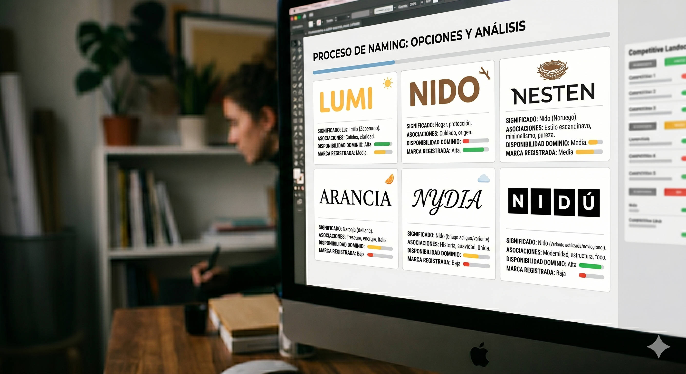
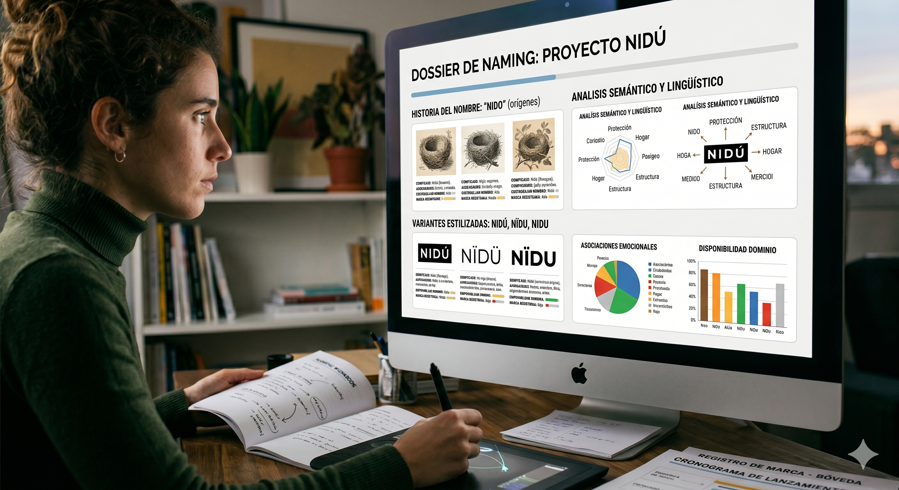

NAMING
El naming es el proceso de creación y selección de un nombre para una marca, producto o empresa. Es una parte fundamental del branding, ya que el nombre es a menudo la primera impresión que los consumidores tienen de una empresa. Un buen naming debe ser memorable, fácil de pronunciar, relevante para el producto o servicio que representa, y capaz de transmitir la personalidad y los valores de la compañía. El proceso de naming involucra la investigación de mercado, la generación de ideas creativas, la evaluación de opciones y la verificación legal de los registros para asegurarse de que el nombre elegido no infrinja derechos de terceros.

LISTADOS

ANALISIS
PROCESO DEL NAMING
Búsqueda de nuevas opciones
El Brief debe responder a la identidad del proyecto.
¿Qué valores debe transmitir?
¿Cuál es el tono de voz?
En este caso, ya se define el rumbo desde Brief del proyecto. La calidez orgánica inspirada en el entorno local como el nido y la segunda opción el naranjo. El listado de nombres surge de esa métrica.
Opciones con disponibilidad de registros
Luego de confeccionar un listado de más de 50 nombres, se eligieron los más coherentes al proyecto para continuar con las consultas de cada uno y así constatar cuales son aquellos que se encuentran disponibles para registros de marca y de dominio.
Primeros nombres elegidos
Los primeros nombres elegidos fueron los siguientes.
Lumi: De Autor (Apellido).
Arancia: Evocativo / Conceptual. Significa Naranja en italiano.
Nesten: Del término en inglés "Nesting" derivado de nest o nido.
Nydia/Nidia: El nombre místico asociado con "nido".
Sugerencia NIDÚ
Ésta es la última sugerencia de nombre para el proyecto. Inspirado en Nido.
Se hicieron las consultas correspondientes de registro de marca y dominio web los cuales se encuentran aptos para utilizar.
Concepto NIDÚ
Para el storytelling, el concepto detrás de NIDÚ se puede articular bajo la idea de la arquitectura esencial. Si recordamos el análisis anterior, NIDO tenía una fuerza conceptual inmensa (el hogar, la estructura, el refugio) pero corría el riesgo de sonar muy literal o rústico. Por otro lado, NIDIA aportaba elegancia, pero abría la puerta a la confusión con un nombre propio femenino.
NIDÚ resuelve la ecuación de forma perfecta.
LISTADO DE NOMBRES
El siguiente documento presenta una selección de nombres del listado original de más de sesenta opciones obtenidos durante el proceso de naming.
Se presentan los nombres obtenidos, su significado, y los resultados de las consultas de registro de marca y dominio.
| NOMBRES | SIGNIFICADO | RM | RD |
|---|---|---|---|
| LUMI | De Autor | OK | NO |
| NIDO | Inicial del proyecto | NO | NO |
| NIDÚ | Metafórico de Nido | OK | OK |
| ARANCIA | Naranja en italiano | OK | OK |
| NESTEN | Derivado de "Nesting" | OK | OK |
| NYDIA | Nido, místico | OK | OK |
| NARANJO | Sugerido, árbol de naranjas | OK | NO |
| NEST | NIDO en inglés | NO | NO |
| HOME | Sugerido, casa en inlés | NO | NO |
| AIDIN | Anagrama de Nidia | OK | OK |
| AVENIDA NARANJO | Sugerido, combinado | OK | OK |
| CASA NARANJO | Sugerido, combinado | OK | OK |
| AZAHAR | Sugerido, Flor de naranjo | NO | NO |
| DOMUS | Casa en latín | NO | NO |
| NEAD | Nido, casa en irlandés | OK | OK |
| OVENBIRD | Hornero en inlés | OK | NO |
AVANCES DE NAMING
Analisis y conclusiones de NIDO
El siguiente documento presenta el análisis y las conclusiones obtenidas durante el proceso de naming.
Registros de marca y dominio
Posibilidades de avance.
Comparaciones de nuevos nombres
Se eligieron los siguientes nombres para continuar con las consultas de registro de marca y dominio: Arancia, Nesten, Lumi y Nydia. Se comparan cada uno de los nombres con los rasgos positivos y negativos de cada uno. Conclusiones
Analisis de NIDÚ
Nidú se encuentra apto para sus respectivos registros de marca y dominio.
Se analiza el naming como marca y dentro del mercado.
Conclusiones para continuar con el proceso.
ANALISIS DE NIDO
COMPARACIÓN DE NOMBRES
CONCLUSIONES DE NIDÚ
NIDÚ
NIDÚ es una firma desarrolladora y constructora de arquitectura residencial de autor de escala media. No es una corporación constructora genérica, sino el vehículo de autorrealización profesional de su fundador que consolida 25 años de experiencia, 64 obras realizadas y una maestría indiscutida en la resolución funcional de plantas residenciales. Es la evolución de un estudio tradicional hacia el control total del producto inmobiliario propio.
SOLUCIÓN
• A nivel funcional urbano: Soluciona el déficit de propuestas de vivienda multifamiliar contemporánea y Premium en Florida Oeste. Le otorga una opción real de arraigo a adultos mayores del barrio que quieren dejar sus casas grandes pero no su entorno, y le abre la puerta a jóvenes que buscan híper conectividad urbana sin perder la vida de casas bajas y calles anchas.
• A nivel de producto: Descarta el departamento "genérico" o "incómodo". Al priorizar la precisión milimétrica de las distribuciones funcionales (las plantas), soluciona los problemas comunes del habitar: ambientes mal aprovechados, falta de luz o espacios residuales.
• A nivel de negocio: Ofrece a los inversores un resguardo de valor transparente, eficiente y controlado, permitiéndoles formar parte de un proceso real y honesto, alejado de la especulación vacía del mercado masivo.
PROPÓSITO
• NIDÚ no busca competir por el metro cuadrado más barato, busca construir valor en el tiempo y convertirse, en un plazo de 5 a 6 años, en el referente absoluto de calidad arquitectónica en la zona, demostrando que su entorno con raíces en esta zona de Florida Oeste puede albergar un estándar de diseño igual o superior al de las zonas tradicionalmente más valoradas.
ATRIBUTOS
• Honesta y Simple: Debemos resistir la ornamentación falsa, la ostentación y el render exagerado. Debe mostrarse tal cual es, utilizando materiales nobles y terminaciones completas.
• Narrativa y Humana: Debe ser capaz de contar la historia de una esquina, el origen de un lote, o la memoria del barrio. La comunicación debe ser literaria y cercana, dejando los datos técnicos en un segundo plano racional.
• Consciente y Precisa: La marca gráfica debe reflejar el orden técnico del arquitecto y el control de costos del desarrollador. La ingeniería se cruza con el arte.
PERSONALIDAD
• Sobria y No Estridente: No grita para llamar la atención en la vía pública; se gana el respeto a través del silencio visual, la elegancia y la confianza real de los hechos.
• Emocional con Base Científica: Conecta desde los lazos de pertenencia, la infancia y la calidez del hogar, pero ejecuta con la precisión matemática de quien controló los costos de decenas de edificios.
• Madura y Sofisticada: Habla desde la experiencia consolidada de 25 años en el sector, manteniendo un tono de aspiración pero accesible y transparente.
ARQUETIPO
• Arquetipo Principal.
Por qué: Su motor es la vocación arquitectónica liberada de los condicionamientos de un cliente tradicional. Busca plasmar una visión propia, duradera, estructurada y estéticamente perfecta que transforme la realidad del barrio.
• Arquetipo Secundario.
Por qué: El origen del nombre (NIDÚ / Nido) evoca de manera directa el resguardo, el regreso al lugar seguro para reorganizarse, la contención familiar y la protección del inversor mediante un negocio compartido y transparente. NIDÚ cuida el barrio y cuida a quienes lo habitan.